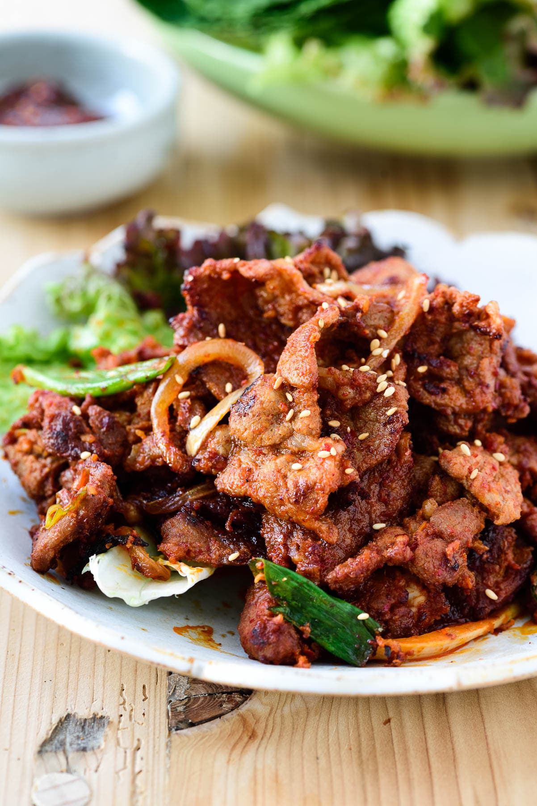

Jeyuk Bokkeum (Spicy Pork Bulgogi)

Description
Jeyuk bokkeum (제육볶음), aka dweji bulgogi (돼지불고기), is a spicy marinated pork. It is a highly popular Korean
BBQ dish. Jeyuk means pork, and bokkeum means stir-fry. This dish is made up of spicy Korean pork bulgogi
marinated in a gochujang based
sauce with lots of fresh garlic and ginger. It is great for easy stir-fry dinner or for outdoor grilling.
Ingredients
- 2 pounds thinly sliced pork shoulder or butt (or a combination of pork shoulder or butt and pork belly)
- 1/2 medium onion, sliced
- 3 scallions, cut into 2-inch pieces
Marinade:
- 6 tablespoons gochujang
- 1 or 2 tablespoons gochugaru (optional)
- 3 tablespoons soy sauce
- 3 tablespoons rice wine (or mirin)
- 2 tablespoons sugar (or brown sugar)
- 1 tablespoon honey (or more sugar)
- 2 tablespoons sesame oil
- 2 tablespoons minced garlic
- 1 tablespoon grated garlic
- 1/2 small apple grated or 2 tablespoons Korean plum syrup, maesil cheong (optional)
Steps
- Thinly slice the meat, if not pre-sliced.
- Mix all marinade ingredients well in a large bowl. Add the meat and toss everything well to evenly coat the
meat with the marinade. Add the onion and scallions and toss again. Let it sit for about 30 minutes.
- Grill or pan fry in a skillet over medium high heat until slightly caramelized. Adjust the heat as necessary.